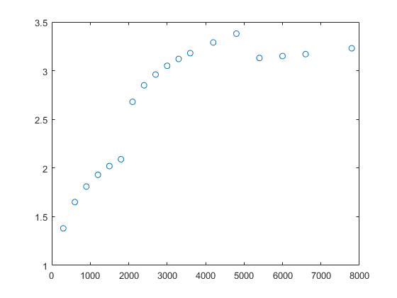
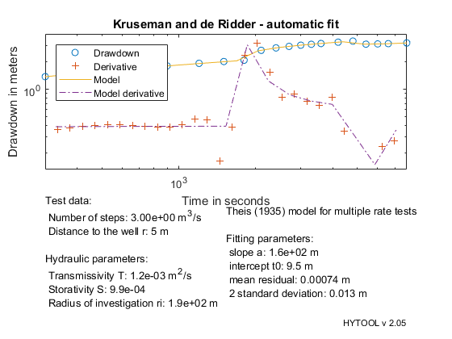

Theis solution for Multiple rate tests.
This demonstrates the interpretation of the drawdown at time t for multiple rate tests without accounting for quadratic head losses with the Theis (1935) solution
Copyright 1998-2007 - Ph. Renard & Co. - GNU GENERAL PUBLIC LICENSE
The data set for this example comes from the following reference: Kruseman and de Ridder (1994), Analysis and Evaluation of Pumping Test Data. International Institute for Land Reclamation and Improvement, Wageningen. The Netherlands. 377pp.
pp. 185: Step drawdown test in a fully penetrated confined aquifer.
Let us first load the data and plot them.
[t,s]=ldf('tmr_ds1.dat'); clf; plot(t,s,'o');
We then define the values of the parameters that are required for the interpretation:
The piezometer is located at 5m from the pumping well. Three rate tests [t(min);q(m3/d)]:[30,500;80,100;130,800];
q=[30*60,500/24/60/60;80*60,700/24/60/60;130*60,600/24/60/60]; tmr_pre(q);
Once the data have been loaded and the parameter defined, we can interpret the data. We do that as usually in two steps. First the parameters p of the model are estimated with the function tmr_gss. Then we an optimum fit.
p=tmr_gss(t,s);
p=fit('tmr',p,t,s);
Norm of Norm of
Iteration SSE Gradient Step
-----------------------------------------------------------
0 0.00811037
1 0.000902437 0.000282526 1.86782
2 0.000726985 0.000492999 1.24983
3 0.00072431 3.44809e-06 0.12262
4 0.00072431 3.07702e-10 0.00117865
5 0.00072431 9.11823e-14 1.22005e-06
Iterations terminated: relative norm of the current step is less than OPTIONS.TolX
We can then display the result of the interpretation. Hytool find that the folowing values fort the transmissivity and storativity:
T = 1.2 e-3 m2/s and S = 9.9 e-4
tmr_rpt(p,t,s,5,'Kruseman and de Ridder - automatic fit')
 The results are in reasonable agreement with the values found by Kruseman and de Ridder (1994): T = 102 m2/d = 1.2 e-3 m2/s S = 9.6 e-4
We then find that the fits are rather similar and both acceptable.